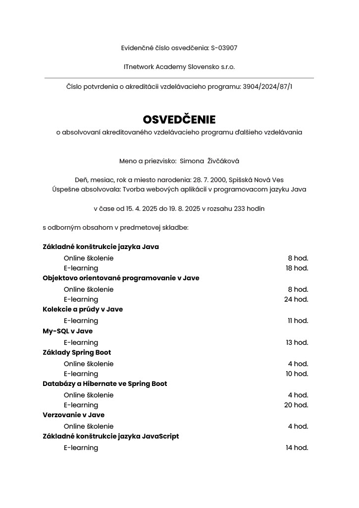
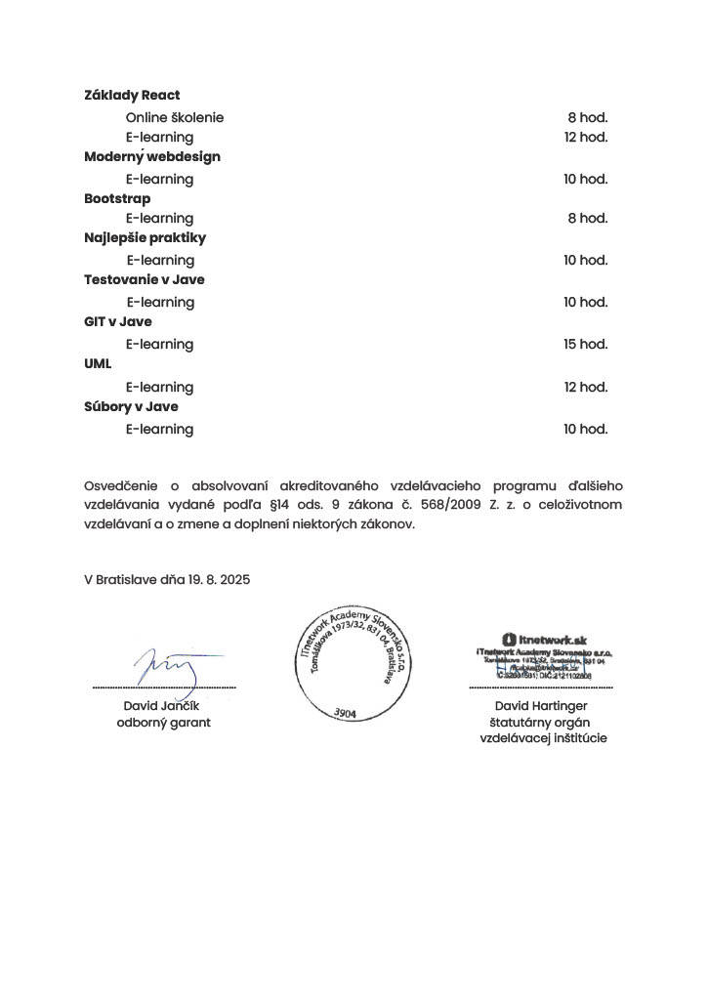
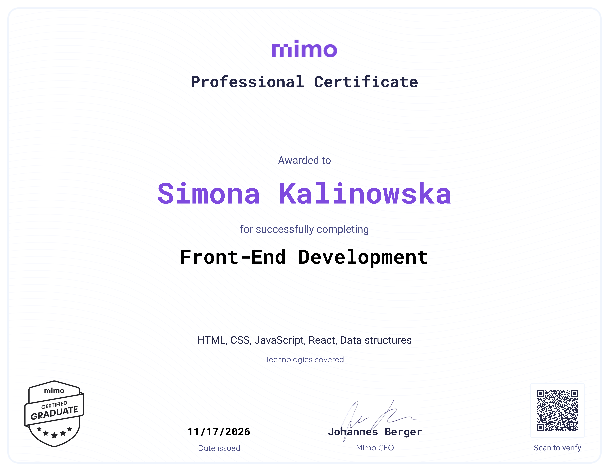

O mne
Ahojte! Volám sa Simona Kalinowska a rozbieham podnikanie v oblasti tvorby webstránok. Momentálne pracujem s HTML, CSS a Javascript, ale zvládnem aj základy Reactu. Mám základné znalosti aj jazyka Java a SQL, ale tomu sa aktívne nevenujem. Robím jednoduché statické stránky (napríklad firemné), alebo stránky jemne interaktívne. Samozrejme, stránky majú responzívny dizajn, čiže sú prispôsobené mobilom aj tabletom.
Mám aj certifikáty: som absolventkou akreditovaného kurzu Tvorba webových aplikácií v jazyku Java a druhý certifikát mám z platformy Mimo.org za absolvovanie kurzu Front-end developer


